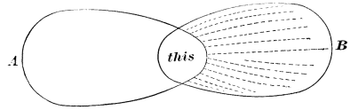
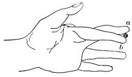

Chapter 20: Perception¶
20.1 Perception¶
Perception and Sensation compared.—A pure sensation we saw above, p. 12, to be an abstraction never realized in adult life. Anything which affects our sense-organs does also more than that: it arouses processes in the hemispheres which are partly due to the organization of that organ by past experiences, and the results of which in consciousness are described as ideas which the sensation suggests. The first of these ideas is that of the thing to which the sensible quality belongs. The consciousness of particular material things present to sense is nowadays called perception. The consciousness of such things may be more or less complete; it may be of the mere name of the thing and its other essential attributes, or it may be of the thing's various remoter relations. It is impossible to draw any sharp line of distinction between the barer and the richer consciousness, because the moment we get beyond the first crude sensation all our consciousness is of what is suggested, and the various suggestions shade gradually into each other, being one and all products of the same psychological machinery of association. In the directer consciousness fewer, in the remoter more, associative processes are brought into play.
Sensational and reproductive brain-processes combined, then, are what give us the content of our perceptions. Every concrete particular material thing is a conflux of sensible qualities, with which we have become acquainted at various times. Some of these qualities, since they are more constant, interesting, or practically important, we regard as essential constituents of the thing. In a general way, such are the tangible shape, size, mass, etc. Other properties, being more fluctuating, we regard as more or less accidental or inessential. We call the former qualities the reality, the latter its appearances. Thus, I hear a sound, and say 'a horse-car'; but the sound is not the horse-car, it is one of the horse-car's least important manifestations. The real horse-car is a feelable, or at most a feelable and visible, thing which in my imagination the sound calls up. So when I get, as now, a brown eye-picture with lines not parallel, and with angles unlike, and call it my big solid rectangular walnut library-table, that picture is not the table. It is not even like the table as the table is for vision, when rightly seen. It is a distorted perspective view of three of the sides of what I mentally perceive (more or less) in its totality and undistorted shape. The back of the table, its square corners, its size, its heaviness, are features of which I am conscious when I look, almost as I am conscious of its name. The suggestion of the name is of course due to mere custom. But no less is that of the back, the size, weight, squareness, etc.
Nature, as Reid says, is frugal in her operations, and will not be at the expense of a particular instinct to give us that knowledge which experience and habit will soon produce. Reproduced attributes tied together with presently felt attributes in the unity of a thing with a name, these are the materials out of which my actually perceived table is made. Infants must go through a long education of the eye and ear before they can perceive the realities which adults perceive. Every perception is an acquired perception.
The Perceptive State of Mind is not a Compound.—There is no reason, however, for supposing that this involves a 'fusion' of separate sensations and ideas. The thing perceived is the object of a unique state of thought; due no doubt in part to sensational, and in part to ideational currents, but in no wise 'containing' psychically the identical 'sensations' and images which these currents would severally have aroused if the others were not simultaneously there. We can often directly notice a sensible difference in the consciousness, between the latter case and the former. The sensible quality changes under our very eye. Take the already-quoted catch, Pas de lieu Rhône que nous: one may read this over and over again without recognizing the sounds to be identical with those of the words paddle your own canoe. As the English associations arise, the sound itself appears to change. Verbal sounds are usually perceived with their meaning at the moment of being heard. Sometimes, however, the associative irradiations are inhibited for a few moments (the mind being preoccupied with other thoughts), whilst the words linger on the ear as mere echoes of acoustic sensation. Then, usually, their interpretation suddenly occurs. But at that moment one may often surprise a change in the very feel of the word. Our own language would sound very different to us if we heard it without understanding, as we hear a foreign tongue. Rises and falls of voice, odd sibilants and other consonants, would fall on our ear in a way of which we can now form no notion. Frenchmen say that English sounds to them like the gazouillement des oiseaux—an impression which it certainly makes on no native ear. Many of us English would describe the sound of Russian in similar terms. All of us are conscious of the strong inflections of voice and explosives and gutturals of German speech in a way in which no German can be conscious of them.
This is probably the reason why, if we look at an isolated printed word and repeat it long enough, it ends by assuming an entirely unnatural aspect. Let the reader try this with any word on this page. He will soon begin to wonder if it can possibly be the word he has been using all his life with that meaning. It stares at him from the paper like a glass eye, with no speculation in it. Its body is indeed there, but its soul is fled. It is reduced, by this new way of attending to it, to its sensational nudity. We never before attended to it in this way, but habitually got it clad with its meaning the moment we caught sight of it, and rapidly passed from it to the other words of the phrase. We apprehended it, in short, with a cloud of associates, and thus perceiving it, we felt it quite otherwise than as we feel it now divested and alone.
Another well-known change is when we look at a landscape with our head upside-down. Perception is to a certain extent baffled by this manœuvre; gradations of distance and other space-determinations are made uncertain; the reproductive or associative processes, in short, decline; and, simultaneously with their diminution, the colors grow richer and more varied, and the contrasts of light and shade more marked. The same thing occurs when we turn a painting bottom-upward. We lose much of its meaning, but, to compensate for the loss, we feel more freshly the value of the mere tints and shadings, and become aware of any lack of purely sensible harmony or balance which they may show. Just so, if we lie on the floor and look up at the mouth of a person talking behind us. His lower lip here takes the habitual place of the upper one upon our retina, and seems animated by the most extraordinary and unnatural mobility, a mobility which now strikes us because (the associative processes being disturbed by the unaccustomed point of view) we get it as a naked sensation and not as part of a familiar object perceived.
Once more, then, we find ourselves driven to admit that when qualities of an object impress our sense and we thereupon perceive the object, the pure sensation as such of those qualities does not still exist inside of the perception and form a constituent thereof. The pure sensation is one thing and the perception another, and neither can take place at the same time with the other, because their cerebral conditions are not the same. They may resemble each other, but in no respect are they identical states of mind.
Perception is of Definite and Probable Things.—The chief cerebral conditions of perception are old paths of association radiating from the sense-impression. If a certain impression be strongly associated with the attributes of a certain thing, that thing is almost sure to be perceived when we get the impression. Examples of such things would be familiar people, places, etc., which we recognize and name at a glance. But where the impression is associated with more than one reality, so that either of two discrepant sets of residual properties may arise, the perception is doubtful and vacillating, and the most that can then be said of it is that it will be of a PROBABLE thing, of the thing which would most usually have given us that sensation.
In these ambiguous cases it is interesting to note that perception is rarely abortive; some perception takes place. The two discrepant sets of associates do not neutralize each other or mix and make a blur. What we more commonly get is first one object in its completeness, and then the other in its completeness. In other words, all brain-processes are such as give rise to what we may call FIGURED consciousness. If paths are shot-through at all, they are shot-through in consistent systems, and occasion thoughts of definite objects, not mere hodge-podges of elements. Even where the brain's functions are half thrown out of gear, as in aphasia or dropping asleep, this law of figured consciousness holds good. A person who suddenly gets sleepy whilst reading aloud will read wrong; but instead of emitting a mere broth of syllables, he will make such mistakes as to read 'supper-time' instead of 'sovereign,' 'overthrow' instead of 'opposite,' or indeed utter entirely imaginary phrases, composed of several definite words, instead of phrases of the book. So in aphasia: where the disease is mild the patient's mistakes consist in using entire wrong words instead of right ones. It is only in grave lesions that he becomes quite inarticulate. These facts show how subtle is the associative link; how delicate yet how strong that connection among brain-paths which makes any number of them, once excited together, thereafter tend to vibrate as a systematic whole. A small group of elements, 'this,' common to two systems, A and B, may touch off A or B according as accident decides the next step (see Fig. 63). If it happen that a single point leading from 'this' to B is momentarily a little more pervious than any leading from 'this' to A, then that little advantage will upset the equilibrium in favor of the entire system B. The currents will sweep first through that point and thence into all the paths of B, each increment of advance making A more and more impossible. The thoughts correlated with A and B, in such a case, will have objects different, though similar. The similarity will, however, consist in some very limited feature if the 'this' be small. Thus the faintest sensations will give rise to the perception of definite things if only they resemble those which the things are wont to arouse.

Illusions.—Let us now, for brevity's sake, treat A and B in Fig. 63 as if they stood for objects instead of brain-processes. And let us furthermore suppose that A and B are, both of them, objects which might probably excite the sensation which I have called 'this,' but that on the present occasion A and not B is the one which actually does so. If, then, on this occasion 'this' suggests A and not B, the result is a correct perception. But if, on the contrary, 'this' suggests B and not A, the result is a false perception, or, as it is technically called, an illusion. But the process is the same, whether the perception be true or false.
Note that in every illusion what is false is what is inferred, not what is immediately given. The 'this,' if it were felt by itself alone, would be all right; it only becomes misleading by what it suggests. If it is a sensation of sight, it may suggest a tactile object, for example, which later tactile experiences prove to be not there. The so-called 'fallacy of the senses,' of which the ancient sceptics made so much account, is not fallacy of the senses proper, but rather of the intellect, which interprets wrongly what the senses give.1
So much premised, let us look a little closer at these illusions. They are due to two main causes. The wrong object is perceived either because
1) Although not on this occasion the real cause, it is yet the habitual, inveterate, or most probable cause of 'this'; or because
2) The mind is temporarily full of the thought of that object, and therefore 'this' is peculiarly prone to suggest it at this moment.
I will give briefly a number of examples under each head. The first head is the more important, because it includes a number of constant illusions to which all men are subject, and which can only be dispelled by much experience.

Illusions of the First Type.—One of the oldest instances dates from Aristotle. Cross two fingers and roll a pea, penholder, or other small object between them. It will seem double. Professor Croom Robertson has given the clearest analysis of this illusion. He observes that if the object be brought into contact first with the forefinger and next with the second finger, the two contacts seem to come in at different points of space. The forefinger-touch seems higher, though the finger is really lower; the second-finger-touch seems lower, though the finger is really higher. "We perceive the contacts as double because we refer them to two distinct parts of space." The touched sides of the two fingers are normally not together in space, and customarily never do touch one thing; the one thing which now touches them, therefore, seems in two places, i.e. seems two things.
There is a whole batch of illusions which come from optical sensations interpreted by us in accordance with our usual rule, although they are now produced by an unusual object. The stereoscope is an example. The eyes see a picture apiece, and the two pictures are a little disparate, the one seen by the right eye being a view of the object taken from a point slightly to the right of that from which the left eye's picture is taken. Pictures thrown on the two eyes by solid objects present this sort of disparity, so that we react on the sensation in our usual way, and perceive a solid. If the pictures be exchanged we perceive a hollow mould of the object, for a hollow mould would cast just such disparate pictures as these. Wheatstone's instrument, the pseudoscope, allows us to look at solid objects and see with each eye the other eye's picture. We then perceive the solid object hollow, if it be an object which might probably be hollow, but not otherwise. Thus the perceptive process is true to its law, which is always to react on the sensation in a determinate and figured fashion if possible, and in as probable a fashion as the case admits. A human face, e.g., never appears hollow to the pseudoscope, for to couple faces and hollowness violates all our habits. For the same reason it is very easy to make an intaglio cast of a face, or the painted inside of a pasteboard mask, look convex, instead of concave as they are.
Curious illusions of movement in objects occur whenever the eyeballs move without our intending it. We have learned in an earlier chapter (p. 72) that the original visual feeling of movement is produced by any image passing over the retina. Originally, however, this sensation is definitely referred neither to the object nor to the eyes. Such definite reference grows up later, and obeys certain simple laws. For one thing, we believe objects to move whenever we get the retinal movement-feeling, but think our eyes are still. This gives rise to an illusion when, after whirling on our heel, we stand still; for then objects appear to continue whirling in the same direction in which, a moment previous, our body actually whirled. The reason is that our eyes are animated, under these conditions, by an involuntary nystagmus or oscillation in their orbits, which may easily be observed in anyone with vertigo after whirling. As these movements are unconscious, the retinal movement-feelings which they occasion are naturally referred to the objects seen. The whole phenomenon fades out after a few seconds. And it ceases if we voluntarily fix our eyes upon a given point.
There is an illusion of movement of the opposite sort, with which every one is familiar at railway stations. Habitually, when we ourselves move forward, our entire field of view glides backward over our retina. When our movement is due to that of the windowed carriage, car, or boat in which we sit, all stationary objects visible through the window give us a sensation of gliding in the opposite direction. Hence, whenever we get this sensation, of a window with all objects visible through it moving in one direction, we react upon it in our customary way, and perceive a stationary field of view, over which the window, and we ourselves inside of it, are passing by a motion of our own. Consequently when another train comes alongside of ours in a station, and fills the entire window, and, after standing still awhile, begins to glide away, we judge that it is our train which is moving, and that the other train is still. If, however, we catch a glimpse of any part of the station through the windows, or between the cars, of the other train, the illusion of our own movement instantly disappears, and we perceive the other train to be the one in motion. This, again, is but making the usual and probable inference from our sensation.
Another illusion due to movement is explained by Helmholtz. Most wayside objects, houses, trees, etc., look small when seen from the windows of a swift train. This is because we perceive them in the first instance unduly near. And we perceive them unduly near because of their extraordinarily rapid parallactic flight backwards. When we ourselves move forward all objects glide backwards, as aforesaid; but the nearer they are, the more rapid is this apparent translocation. Relative rapidity of passage backwards is thus so familiarly associated with nearness that when we feel it we perceive nearness. But with a given size of retinal image the nearer an object is, the smaller do we judge its actual size to be. Hence in the train, the faster we go, the nearer do the trees and houses seem; and the nearer they seem, the smaller (with that size of retinal image) must they look.
The feelings of our eyes' convergence, of their accommodation, the size of the retinal image, etc., may give rise to illusions about the size and distance of objects, which also belong to this first type.
Illusions of the Second Type.—In this type we perceive a wrong object because our mind is full of the thought of it at the time, and any sensation which is in the least degree connected with it touches off, as it were, a train already laid, and gives us a sense that the object is really before us. Here is a familiar example:
"If a sportsman, while shooting woodcock in cover, sees a bird about the size and color of a woodcock get up and fly through the foliage, not having time to see more than that it is a bird of such a size and color, he immediately supplies by inference the other qualities of a woodcock, and is afterwards disgusted to find that he has shot a thrush. I have done so myself, and could hardly believe that the thrush was the bird I fired at, so complete was my mental supplement to my visual perception."2
As with game, so with enemies, ghosts, and the like. Anyone waiting in a dark place and expecting or fearing strongly a certain object will interpret any abrupt sensation to mean that object's presence. The boy playing 'I spy,' the criminal skulking from his pursuers, the superstitious person hurrying through the woods or past the churchyard at midnight, the man lost in the woods, the girl who tremulously has made an evening appointment with her swain, all are subject to illusions of sight and sound which make their hearts beat till they are dispelled. Twenty times a day the lover, perambulating the streets with his preoccupied fancy, will think he perceives his idol's bonnet before him.
The Proof-reader's Illusion.—I remember one night in Boston, whilst waiting for a 'Mount Auburn' car to bring me to Cambridge, reading most distinctly that name upon the signboard of a car on which (as I afterwards learned) 'North Avenue' was painted. The illusion was so vivid that I could hardly believe my eyes had deceived me. All reading is more or less performed in this way.
"Practised novel-or newspaper-readers could not possibly get on so fast if they had to see accurately every single letter of every word in order to perceive the words. More than half of the words come out of their mind, and hardly half from the printed page. Were this not so, did we perceive each letter by itself, typographic errors in well-known words would never be overlooked. Children, whose ideas are not yet ready enough to perceive words at a glance, read them wrong if they are printed wrong, that is, right according to the way of printing. In a foreign language, although it may be printed with the same letters, we read by so much the more slowly as we do not understand, or are unable promptly to perceive, the words. But we notice misprints all the more readily. For this reason Latin and Greek, and still better Hebrew, works are more correctly printed, because the proofs are better corrected, than in German works. Of two friends of mine, one knew much Hebrew, the other little; the latter, however, gave instruction in Hebrew in a gymnasium; and when he called the other to help correct his pupils' exercises, it turned out that he could find out all sorts of little errors better than his friend, because the latter's perception of the words as totals was too swift."3
Testimony to personal identity is proverbially fallacious for similar reasons. A man has witnessed a rapid crime or accident, and carries away his mental image. Later he is confronted by a prisoner whom he forthwith perceives in the light of that image, and recognizes or 'identifies' as the criminal, although he may never have been near the spot. Similarly at the so-called 'materializing séances' which fraudulent mediums give: in a dark room a man sees a gauze-robed figure who in a whisper tells him she is the spirit of his sister, mother, wife, or child, and falls upon his neck. The darkness, the previous forms, and the expectancy have so filled his mind with premonitory images that it is no wonder he perceives what is suggested. These fraudulent 'séances' would furnish most precious documents to the psychology of perception, if they could only be satisfactorily inquired into. In the hypnotic trance any suggested object is sensibly perceived. In certain subjects this happens more or less completely after waking from the trance. It would seem that under favorable conditions a somewhat similar susceptibility to suggestion may exist in certain persons who are not otherwise entranced at all.
This suggestibility obtains in all the senses, although high authorities have doubted this power of imagination to falsify present impressions of sense. Everyone must be able to give instances from the smell-sense. When we have paid the faithless plumber for pretending to mend our drains, the intellect inhibits the nose from perceiving the same unaltered odor, until perhaps several days go by. As regards the ventilation or heating of rooms, we are apt to feel for some time as we think we ought to feel. If we believe the ventilator is shut, we feel the room close. On discovering it open, the oppression disappears.
It is the same with touch. Everyone must have felt the sensible quality change under his hand, as sudden contact with something moist or hairy, in the dark, awoke a shock of disgust or fear which faded into calm recognition of some familiar object. Even so small a thing as a crumb of potato on the table-cloth, which we pick up, thinking it a crumb of bread, feels horrible for a few moments to our fancy, and different from what it is.
In the sense of hearing, similar mistakes abound. Everyone must recall some experience in which sounds have altered their character as soon as the intellect referred them to a different source. The other day a friend was sitting in my room, when the clock, which has a rich low chime, began to strike. "Hollo!" said he, "hear that hand-organ in the garden," and was surprised at finding the real source of the sound. I have had myself a striking illusion of the sort. Sitting reading, late one night, I suddenly heard a most formidable noise proceeding from the upper part of the house, which it seemed to fill. It ceased, and in a moment renewed itself. I went into the hall to listen, but it came no more. Resuming my seat in the room, however, there it was again, low, mighty, alarming, like a rising flood or the avant-courier of an awful gale. It came from all space. Quite startled, I again went into the hall, but it had already ceased once more. On returning a second time to the room, I discovered that it was nothing but the breathing of a little Scotch terrier which lay asleep on the floor. The noteworthy thing is that as soon as I recognized what it was, I was compelled to think it a different sound, and could not then hear it as I had heard it a moment before.
The sense of sight is pregnant with illusions of both the types considered. No sense gives such fluctuating impressions of the same object as sight does. With no sense are we so apt to treat the sensations immediately given as mere signs; with none is the invocation from memory of a thing, and the consequent perception of the latter, so immediate. The 'thing' which we perceive always resembles, as we shall hereafter see, the object of some absent sensation, usually another optical figure which in our mind has come to be a standard bit of reality; and it is this incessant reduction of our immediately given optical objects to more standard and 'real' forms which has led some authors into the mistake of thinking that our optical sensations are originally and natively of no particular form at all.
Of accidental and occasional illusions of sight many amusing examples might be given. Two will suffice. One is a reminiscence of my own. I was lying in my berth in a steamer listening to the sailors 'at their devotions with the holystones' outside; when, on turning my eyes to the window, I perceived with perfect distinctness that the chief-engineer of the vessel had entered my state-room, and was standing looking through the window at the men at work upon the guards. Surprised at his intrusion, and also at his intentness and immobility, I remained watching him and wondering how long he would stand thus. At last I spoke; but getting no reply, sat up in my berth, and then saw that what I had taken for the engineer was my own cap and coat hanging on a peg beside the window. The illusion was complete; the engineer was a peculiar-looking man; and I saw him unmistakably; but after the illusion had vanished I found it hard voluntarily to make the cap and coat look like him at all.
'Apperception.'—In Germany since Herbart's time psychology has always had a great deal to say about a process called Apperception. The incoming ideas or sensations are said to be 'apperceived' by 'masses' of ideas already in the mind. It is plain that the process we have been describing as perception is, at this rate, an apperceptive process. So are all recognition, classing, and naming; and passing beyond these simplest suggestions, all farther thoughts about our percepts are apperceptive processes as well. I have myself not used the word apperception, because it has carried very different meanings in the history of philosophy, and 'psychic reaction,' 'interpretation,' 'conception,' 'assimilation,' 'elaboration,' or simply 'thought,' are perfect synonyms for its Herbartian meaning, widely taken. It is, moreover, hardly worth while to pretend to analyze the so-called apperceptive performances beyond the first or perceptive stage, because their variations and degrees are literally innumerable. 'Apperception' is a name for the sum total of the effects of what we have studied as association; and it is obvious that the things which a given experience will suggest to a man depend on what Mr. Lewes calls his entire psychostatical conditions, his nature and stock of ideas, or, in other words, his character, habits, memory, education, previous experience, and momentary mood. We gain no insight into what really occurs either in the mind or in the brain by calling all these things the 'apperceiving mass,' though of course this may upon occasion be convenient. On the whole I am inclined to think Mr. Lewes's term of 'assimilation' the most fruitful one yet used.
The 'apperceiving mass' is treated by the Germans as the active factor, the apperceived sensation as the passive one; the sensation being usually modified by the ideas in the mind. Out of the interaction of the two, cognition is produced. But as Steinthal remarks, the apperceiving mass is itself often modified by the sensation. To quote him: "Although the a priori moment commonly shows itself to be the more powerful, apperception-processes can perfectly well occur in which the new observation transforms or enriches the apperceiving group of ideas. A child who hitherto has seen none but four-cornered tables apperceives a round one as a table; but by this the apperceiving mass ('table') is enriched. To his previous knowledge of tables comes this new feature that they need not be four-cornered, but may be round. In the history of science it has happened often enough that some discovery, at the same time that it was apperceived, i.e. brought into connection with the system of our knowledge, transformed the whole system. In principle, however, we must maintain that, although either factor is both active and passive, the a priori factor is almost always the more active of the two."4
Genius and Old-fogyism.—This account of Steinthal's brings out very clearly the difference between our psychological conceptions and what are called concepts in logic. In logic a concept is unalterable; but what are popularly called our 'conceptions of things' alter by being used. The aim of 'Science' is to attain conceptions so adequate and exact that we shall never need to change them. There is an everlasting struggle in every mind between the tendency to keep unchanged, and the tendency to renovate, its ideas. Our education is a ceaseless compromise between the conservative and the progressive factors. Every new experience must be disposed of under some old head. The great point is to find the head which has to be least altered to take it in. Certain Polynesian natives, seeing horses for the first time, called them pigs, that being the nearest head. My child of two played for a week with the first orange that was given him, calling it a 'ball.' He called the first whole eggs he saw 'potatoes,' having been accustomed to see his 'eggs' broken into a glass, and his potatoes without the skin. A folding pocket-corkscrew he unhesitatingly called 'bad-scissors.' Hardly any one of us can make new heads easily when fresh experiences come. Most of us grow more and more enslaved to the stock conceptions with which we have once become familiar, and less and less capable of assimilating impressions in any but the old ways. Old-fogyism, in short, is the inevitable terminus to which life sweeps us on. Objects which violate our established habits of 'apperception' are simply not taken account of at all; or, if on some occasion we are forced by dint of argument to admit their existence, twenty-four hours later the admission is as if it were not, and every trace of the unassimilable truth has vanished from our thought. Genius, in truth, means little more than the faculty of perceiving in an unhabitual way.
On the other hand, nothing is more congenial, from babyhood to the end of life, than to be able to assimilate the new to the old, to meet each threatening violator or burster of our well-known series of concepts, as it comes in, see through its unwontedness, and ticket it off as an old friend in disguise. This victorious assimilation of the new is in fact the type of all intellectual pleasure. The lust for it is scientific curiosity. The relation of the new to the old, before the assimilation is performed, is wonder. We feel neither curiosity nor wonder concerning things so far beyond us that we have no concepts to refer them to or standards by which to measure them.5 The Fuegians, in Darwin's voyage, wondered at the small boats, but took the big ship as a 'matter of course.' Only what we partly know already inspires us with a desire to know more. The more elaborate textile fabrics, the vaster works in metal, to most of us are like the air, the water, and the ground, absolute existences which awaken no ideas. It is a matter of course that an engraving or a copper-plate inscription should possess that degree of beauty. But if we are shown a pen-drawing of equal perfection, our personal sympathy with the difficulty of the task makes us immediately wonder at the skill. The old lady admiring the Academician's picture says to him: "And is it really all done by hand?"
The Physiological Process in Perception.—Enough has now been said to prove the general law of perception, which is this: that whilst part of what we perceive comes through our senses from the object before us, another part (and it may be the larger part) always comes out of our own mind.
At bottom this is but a case of the general fact that our nerve-centres are organs for reacting on sense-impressions, and that our hemispheres, in particular, are given us that records of our past private experience may coöperate in the reaction. Of course such a general statement is vague. If we try to put an exact meaning into it, what we find most natural to believe is that the brain reacts by paths which the previous experiences have worn, and which make us perceive the probable thing, i.e., the thing by which on the previous occasions the reaction was most frequently aroused. The reaction of the hemispheres consists in the lighting up of a certain system of paths by the current entering from the outer world. What corresponds to this mentally is a certain special pulse of thought, the thought, namely, of that most probable object. Farther than this in the analysis we can hardly go.
Hallucinations.—Between normal perception and illusion we have seen that there is no break, the process being identically the same in both. The last illusions we considered might fairly be called hallucinations. We must now consider the false perceptions more commonly called by that name. In ordinary parlance hallucination is held to differ from illusion in that, whilst there is an object really there in illusion, in hallucination there is no objective stimulus at all. We shall presently see that this supposed absence of objective stimulus in hallucination is a mistake, and that hallucinations are often only extremes of the perceptive process, in which the secondary cerebral reaction is out of all normal proportion to the peripheral stimulus which occasions the activity. Hallucinations usually appear abruptly and have the character of being forced upon the subject. But they possess various degrees of apparent objectivity. One mistake in limine must be guarded against. They are often talked of as images projected outwards by mistake. But where an hallucination is complete, it is much more than a mental image. An hallucination, subjectively considered, is a sensation, as good and true a sensation as if there were a real object there. The object happens not to be there, that is all.
The milder degrees of hallucination have been designated as pseudo-hallucinations. Pseudo-hallucinations and hallucinations have been sharply distinguished from each other only within a few years. From ordinary images of memory and fancy, pseudo-hallucinations differ in being much more vivid, minute, detailed, steady, abrupt, and spontaneous, in the sense that all feeling of our own activity in producing them is lacking. Dr. Kandinsky had a patient who, after taking opium or haschisch, had abundant pseudo-hallucinations and hallucinations. As he also had strong visualizing power and was an educated physician, the three sorts of phenomena could be easily compared. Although projected outwards (usually not farther than the limit of distinctest vision, a foot or so), the pseudo-hallucinations lacked the character of objective reality which the hallucinations possessed, but, unlike the pictures of imagination, it was almost impossible to produce them at will. Most of the 'voices' which people hear (whether they give rise to delusions or not) are pseudo-hallucinations. They are described as 'inner' voices, although their character is entirely unlike the inner speech of the subject with himself. I know several persons who hear such inner voices making unforeseen remarks whenever they grow quiet and listen for them. They are a very common incident of delusional insanity, and may at last grow into vivid or completely exteriorized hallucinations. The latter are comparatively frequent occurrences in sporadic form; and certain individuals are liable to have them often. From the results of the 'Census of Hallucinations,' which was begun by Edmund Gurney, it would appear that, roughly speaking, one person at least in every ten is likely to have had a vivid hallucination at some time in his life. The following case from a healthy person will give an idea of what these hallucinations are:
"When a girl of eighteen, I was one evening engaged in a very painful discussion with an elderly person. My distress was so great that I took up a thick ivory knitting-needle that was lying on the mantelpiece of the parlor and broke it into small pieces as I talked. In the midst of the discussion I was very wishful to know the opinion of a brother with whom I had an unusually close relationship. I turned round and saw him sitting at the farther side of a centre-table, with his arms folded (an unusual position with him), but, to my dismay, I perceived from the sarcastic expression of his mouth that he was not in sympathy with me, was not 'taking my side,' as I should then have expressed it. The surprise cooled me, and the discussion was dropped.
"Some minutes after, having occasion to speak to my brother, I turned towards him, but he was gone. I inquired when he left the room, and was told that he had not been in it, which I did not believe, thinking that he had come in for a minute and had gone out without being noticed. About an hour and a half afterwards he appeared, and convinced me, with some trouble, that he had never been near the house that evening. He is still alive and well."
The hallucinations of fever-delirium are a mixture of pseudo-hallucination, true hallucination, and illusion. Those of opium, haschish, and belladonna resemble them in this respect. The commonest hallucination of all is that of hearing one's own name called aloud. Nearly one half of the sporadic cases which I have collected are of this sort.
Hallucination and Illusion.—Hallucinations are easily produced by verbal suggestion in hypnotic subjects. Thus, point to a dot on a sheet of paper, and call it 'General Grant's photograph,' and your subject will see a photograph of the General there instead of the dot. The dot gives objectivity to the appearance, and the suggested notion of the General gives it form. Then magnify the dot by a lens; double it by a prism or by nudging the eyeball; reflect it in a mirror; turn it upside-down; or wipe it out; and the subject will tell you that the 'photograph' has been enlarged, doubled, reflected, turned about, or made to disappear. In M. Binet's language, the dot is the outward point de repère which is needed to give objectivity to your suggestion, and without which the latter will only produce an inner image in the subject's mind. M. Binet has shown that such a peripheral point de repère is used in an enormous number, not only of hypnotic hallucinations, but of hallucinations of the insane. These latter are often unilateral; that is, the patient hears the voices always on one side of him, or sees the figure only when a certain one of his eyes is open. In many of these cases it has been distinctly proved that a morbid irritation in the internal ear, or an opacity in the humors of the eye, was the starting point of the current which the patient's diseased acoustic or optical centres clothed with their peculiar products in the way of ideas. Hallucinations produced in this way are 'illusions'; and M. Binet's theory, that all hallucinations must start in the periphery, may be called an attempt to reduce hallucination and illusion to one physiological type, the type, namely, to which normal perception belongs. In every case, according to M. Binet, whether of perception, of hallucination, or of illusion, we get the sensational vividness by means of a current from the peripheral nerves. It may be a mere trace of a current. But that trace is enough to kindle the maximal process of disintegration in the cells (cf. p. 310), and to give to the object perceived the character of externality. What the nature of the object shall be will depend wholly on the particular system of paths in which the process is kindled. Part of the thing in all cases comes from the sense-organ, the rest is furnished by the mind. But we cannot by introspection distinguish between these parts; and our only formula for the result is that the brain has reacted on the impression in the resulting way.
M. Binet's theory accounts indeed for a multitude of cases, but certainly not for all. The prism does not always double the false appearance, nor does the latter always disappear when the eyes are closed. For Binet, an abnormally or exclusively active part of the cortex gives the nature of what shall appear, whilst a peripheral sense-organ alone can give the intensity sufficient to make it appear projected into real space. But since this intensity is after all but a matter of degree, one does not see why, under rare conditions, the degree in question might not be attained by inner causes exclusively. In that case we should have certain hallucinations centrally initiated, as well as the peripherally initiated hallucinations which are the only sort that M. Binet's theory allows. It seems probable on the whole, therefore, that centrally initiated hallucinations can exist. How often they do exist is another question. The existence of hallucinations which affect more than one sense is an argument for central initiation. For, grant that the thing seen may have its starting point in the outer world, the voice which it is heard to utter must be due to an influence from the visual region, i.e. must be of central origin.
Sporadic cases of hallucination, visiting people only once in a lifetime (which seem to be a quite frequent type), are on any theory hard to understand in detail. They are often extraordinarily complete; and the fact that many of them are reported as veridical, that is, as coinciding with real events, such as accidents, deaths, etc., of the persons seen, is an additional complication of the phenomenon. The first really scientific study of hallucination in all its possible bearings, on the basis of a large mass of empirical material, was begun by Mr. Edmund Gurney and is continued by other members of the Society for Psychical Research; and the 'Census' is now being applied to several countries under the auspices of the International Congress of Experimental Psychology. It is to be hoped that out of these combined labors something solid will eventually grow. The facts shade off into the phenomena of motor automatism, trance, etc.; and nothing but a wide comparative study can give really instructive results.6
-
In Mind, IX. 206, M. Binet points out the fact that what is fallaciously inferred is always an object of some other sense than the 'this.' 'Optical illusions' are generally errors of touch and muscular sensibility, and the fallaciously perceived object and the experiences which correct it are both tactile in these cases. ↩
-
Romanes, Mental Evolution in Animals, p. 324. ↩
-
M. Lazarus: Das Leben d. Seele (1857), II. p. 32. In the ordinary hearing of speech half the words we seem to hear are supplied out of our own head. A language with which we are familiar is understood even when spoken in low tones and far off. An unfamiliar language is unintelligible under these conditions. The 'ideas' for interpreting the sounds by not being ready-made in our minds, as they are in our familiar mother-tongue, do not start up at so faint a cue. ↩
-
Einleitung in die Psychologie u. Sprachwissenschaft (1881), p. 171. ↩
-
The great maxim in pedagogy is to knit every new piece of knowledge on to a preëxisting curiosity—i.e., to assimilate its matter in some way to what is already known. Hence the advantage of "comparing all that is far off and foreign to something that is near home, of making the unknown plain by the example of the known, and of connecting all the instruction with the personal experience of the pupil.... If the teacher is to explain the distance of the sun from the earth, let him ask ... 'If anyone there in the sun fired off a cannon straight at you, what should you do?' 'Get out of the way,' would be the answer. 'No need of that,' the teacher might reply. 'You may quietly go to sleep in your room, and get up again, you may wait till your confirmation-day, you may learn a trade, and grow as old as I am,—then only will the cannon-ball be getting near, then you may jump to one side! See, so great as that is the sun's distance!'" (K. Lange, Ueber Apperception, 1879, p. 76.) ↩
-
The writer of the present work is Agent of the Census for America, and will thankfully receive accounts of cases of hallucination of vision, hearing, etc., of which the reader may have knowledge. ↩